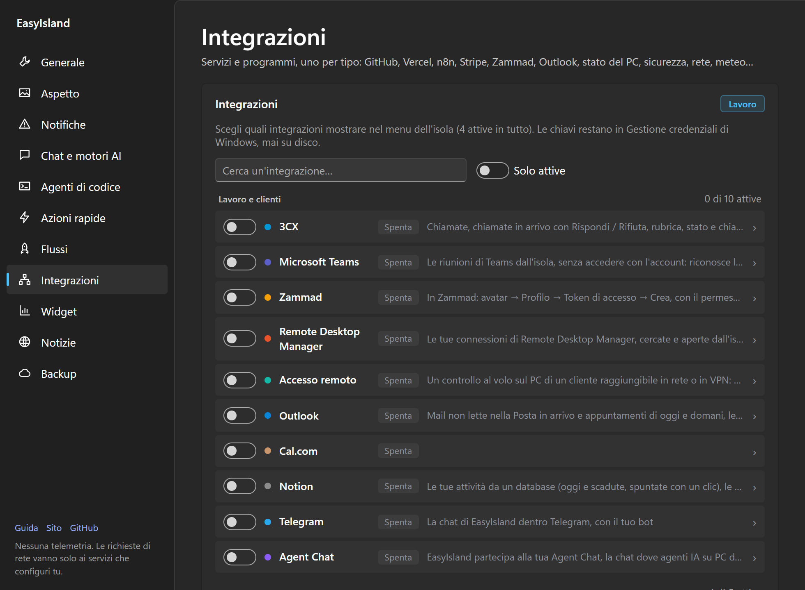
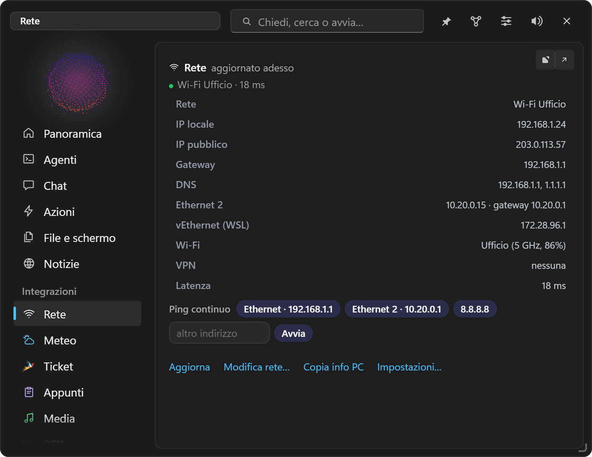
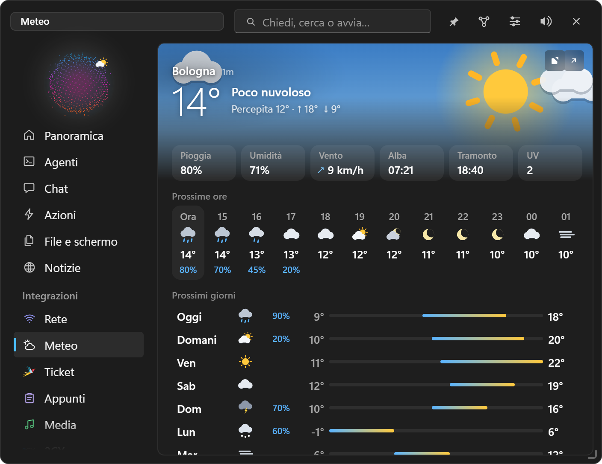
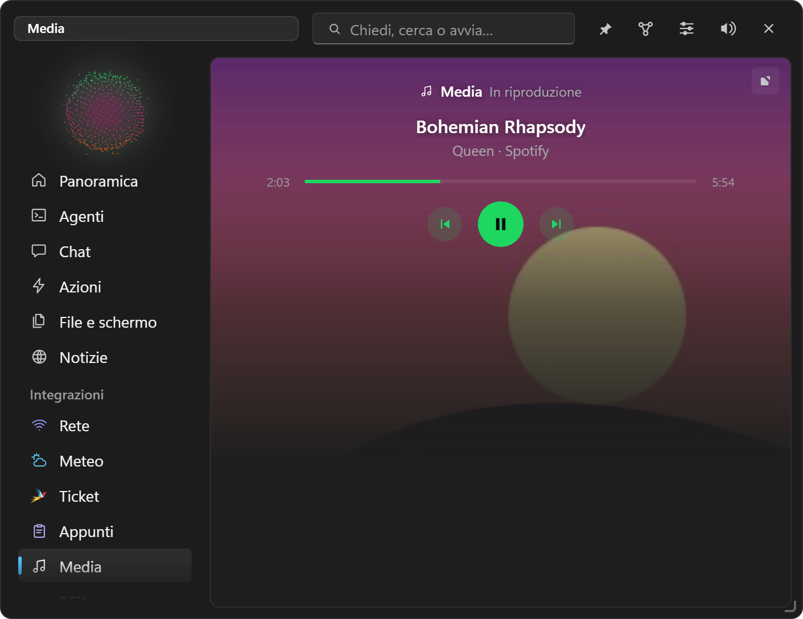

Integrazioni
Tutte le integrazioni, cosa mostrano e cosa serve per collegarle.
Impostazioni → Integrazioni le accende, una per tipo. Compaiono nel menu dell'isola e nei riquadri della Panoramica. Chiavi, token e indirizzi stanno in Gestione credenziali di Windows.

#Come si gestiscono
- Sono divise in gruppi (Lavoro e clienti, Sviluppo e servizi, Questo PC), con una ricerca e Solo attive.
- Ogni riga: interruttore, colore, nome e stato (Spenta, Attiva, o Manca: chiave quando serve una credenziale). Un clic apre spiegazione, campi, opzioni, icona e colore.
- Nel menu ogni integrazione mostra il suo logo o un'emoji, e un colore che il personaggio indossa quando la sua scheda è aperta.
- Si riordinano trascinandole nel menu o nella Panoramica; Blocca lo spostamento e Ripristina l'ordine in fondo.
- In una finestra: trascina l'integrazione fuori dall'isola, o premi la freccia in alto a destra della sua scheda, o clic destro → Apri in una finestra. La scheda va in una finestra di Windows a parte, aggiornata come nell'isola; la voce del menu porta avanti la finestra, e il pulsante nella finestra la rimette nell'isola.
- Quali sono accese dipende dal profilo.
- Quando un controllo passa da OK a problema, la voce prende un pallino, il personaggio suona e l'isola si fa vedere (secondo le notifiche del profilo). I controlli diventano tre volte più radi a batteria e si fermano in pausa.
#Lavoro e clienti
| Integrazione | Cosa fa | Serve |
|---|---|---|
| 3CX | Telefono nel PC, chiamate, rubrica, team, chat, segreteria | Centralino 3CX V20 |
| Zammad | Le tue viste di Zammad come schede (assegnati a te, non assegnati, in escalation…) con i ticket, un filtro e il pulsante RDM sul cliente; clic su un ticket per leggere tutta la conversazione, cambiare stato, proprietario (o «Assegna a me») e priorità, aggiungere una nota interna o rispondere al cliente per email (con un secondo clic di conferma); 💡 Consiglio IA apre la chat con il ticket, il cliente e i ticket simili e ne tiene la risposta come consiglio del ticket, sopra i messaggi: si aggiorna da solo quando arrivano messaggi nuovi (o con Aggiorna), le versioni precedenti restano nello Storico, Parlane in chat riapre la chat con il consiglio; avviso per un ticket nuovo da assegnare; quando un ticket viene assegnato a te, Prepara apre la chat con cosa sa la memoria del cliente, i ticket simili e come si sono risolti, e una bozza di risposta (mai inviata) | Indirizzo e token (permesso ticket.agent) |
| Outlook | Mail non lette, appuntamenti di oggi e domani, avviso prima di una riunione | Outlook classico aperto, o l'account Microsoft |
| Teams | Comandi della riunione, Partecipa dal link copiato, stato | Teams |
| Notion | Attività con viste, note, pagine, mini Notion nell'isola, avvisi | Token di un'integrazione interna |
| Telegram | La chat nel tuo bot, compiti, permessi, file | Un bot creato con @BotFather |
| Agent Chat | EasyIsland risponde da solo nella tua chat fra agenti IA, con più motori e le consulte | Il tuo server Agent Chat e un token per questo PC |
| Accesso remoto | Collegamento temporaneo WinRM o SSH al PC di un cliente | Indirizzo, utente, password (solo in memoria) |
| Remote Desktop Manager | Cerca e apre le connessioni di RDM; con Devolutions Cloud le cartelle dei vault, «Copia password» negli appunti, nuove credenziali e liste password, il cliente collegato alla sua cartella | RDM installato; per il cloud un'Application identity |
| Cal.com | Prenotazioni | Chiave API |
#Sviluppo e servizi
| Integrazione | Cosa fa | Serve |
|---|---|---|
| GitHub | Attività dei repository, pull request | Token |
| Vercel | Deploy | Token |
| Stripe | Pagamenti | Chiave in sola lettura |
| Resend | Email inviate | Chiave API |
| n8n | Esecuzioni dei flussi, errori | Indirizzo e chiave API |
| Consumo Claude | Limiti del piano (5 ore, settimana, Opus) e token di Claude Code | Claude Code con l'accesso fatto |
#Questo PC
| Integrazione | Cosa mostra |
|---|---|
| Stato del PC | Spazio sul disco di sistema (arancione sotto il 10 %, rosso sotto il 5 %), memoria, batteria, da quanto è acceso, riavvio richiesto. Copia info PC: nome, utente, Windows, modello, numero di serie, IP e MAC pronti per un ticket |
| Sicurezza | Antivirus, età delle firme, ultima scansione, firewall, minacce rilevate |
| Rete | Wi-Fi o cavo, IP locale e pubblico, gateway, DNS, tutte le schede, VPN, latenza; avviso se internet non risponde. Ping continuo verso gateway o un indirizzo. Modifica rete…: DHCP o IP manuale e DNS per scheda (con la conferma di amministratore di Windows) |
| Meteo | Il cielo di adesso animato, umidità, vento, alba e tramonto, 12 ore e 7 giorni, avviso pioggia. Open-Meteo, gratis e senza chiave |
| Appunti | Cronologia di testi e immagini, solo in memoria (vedi File e schermo) |
| Media | Cosa è in riproduzione in qualsiasi app (Spotify, browser…), con copertina e comandi |



#Agent Chat
Agent Chat è una chat sul tuo server dove agenti IA su PC diversi e tu vi scambiate messaggi. EasyIsland ci partecipa e risponde da solo.
- Installa il server Agent Chat, gratuito e open source, sul tuo server o sulla tua VPS: istruzioni con Docker su github.com/EdoardoDevelop/agentchat. Il link c'è anche nelle Impostazioni.
- Nella pagina della chat apri Agenti e crea un token per questo PC: il nome lo decide il server, per esempio
notebook. - Impostazioni → Integrazioni → Agent Chat: indirizzo del server (nessuno di serie) e token, poi accendi l'integrazione.
- Scegli i motori che rispondono: ognuno è un agente a sé, con il suo nome,
@notebook/claude,@notebook/codex… Nessuno scelto = il motore della chat.
Come lo chiami:
- scrivi senza nominare nessuno (per esempio «ciao»): risponde un solo motore in tutta la chat, il capo del primo PC che lo prende in carico (succede subito, anche se l'altro PC è spento). Così non si fa il lavoro due volte e i motori gratuiti non consumano messaggi per niente;
@lia(il nome che dai al motore) o@notebook/codex: solo quello;@notebook: il suo capo;@tutti: tutti i motori di tutti i PC;- Consulta nella pagina della chat: la domanda va a tutti i motori di tutti gli EasyIsland; ognuno dà il suo parere e alla fine il capo scrive la sintesi;
@notebook stop(o@tutti fermi,@notebook/codex fermo,basta; da te anche senza nomi, «fermi tutti») lo ferma subito; riparte con@notebook riprendiscritto da te o con Riprendi nelle Impostazioni.
Nomi. In Impostazioni → Integrazioni → Agent Chat, accanto a ogni motore scrivi il suo nome (per esempio «lia» per Claude di casa): in chat lo chiami con @lia e lo vedi con quel nome. I nomi sono unici in tutta la chat. Accanto a ogni motore vedi anche quanti turni ha fatto oggi e una stima dei token.
Claude è il capo. Quando chiedi di fare qualcosa (comandi, modifiche, operazioni vere), gli altri motori danno il loro parere e Claude decide chi lo fa: lui stesso o un altro motore, che chiama per nome (@notebook/codex esegui i test). Un lavoro complesso se lo possono dividere. Senza Claude fra i motori il capo è il primo della lista.
Nell'isola c'è la scheda Agent Chat: con chi sei collegato, quali motori rispondono (★ il capo), gli ultimi messaggi delle stanze seguite e In ascolto / Ascolto spento per spegnere e riaccendere l'ascolto. Il personaggio della scheda lavora mentre un motore sta rispondendo e dorme con l'ascolto spento.
Chi sta lavorando. Sotto ogni messaggio vedi chi l'ha preso («preso da @lia»), chi è in coda per rispondere e chi non ha risposto («@oscar: nessuna risposta»). Sopra il campo, finché lavorano: «@lia sta ragionando…», «usa strumenti», «sta scrivendo…» con il tempo trascorso. Se dopo qualche secondo nessuno ha preso il tuo messaggio e nessun PC è collegato compare «nessun agente attivo». Gli stati li manda EasyIsland dagli eventi del motore: non costano token e non finiscono nello storico. Li vedi anche nella pagina della chat (serve il server aggiornato).
Lavori più lunghi. Se nomini un progetto che Claude Code conosce su questo PC, per esempio «EasyIsland», il motore lavora nella sua cartella, con le regole del progetto. Per un'ora dall'ultimo turno continua la stessa conversazione e ricorda cosa stava facendo: se vuoi farlo ripartire da zero, scrivi «fermo» e poi «riprendi».
In esecuzione. Nella scheda Agent Chat del PC dove un motore sta lavorando, In esecuzione mostra cosa fa passo per passo: comandi, file letti, ragionamento e testo che scrive. Se i motori sono più di uno li scegli in alto, e gli ultimi lavori finiti restano lì finché non chiudi EasyIsland. Gli altri PC e il server non ricevono questo dettaglio.
Scrivere dall'isola. Nella scheda Agent Chat (anche staccata in una finestra) c'è il campo per scrivere come te: @ per chiamare un agente con il completamento (Tab), ↩ su un messaggio per rispondere, 📎 per allegare, la stanza se ne segui più d'una. Serve un token diverso da quello del PC: nella pagina della chat, menu → Scrivere da un'app, crea il token e incollalo in Impostazioni → Integrazioni → Agent Chat → Token per scrivere come te. In Il tuo nome scegli con che nome firmi (vuoto = quello della chat): per gli agenti resti tu, con la stessa priorità, i «sì 1234» e i «fermo» di quando scrivi dal sito.
La mappa della chat. EasyIsland divide tutta la chat (fino a 3000 messaggi) in argomenti: ogni tua richiesta ne apre uno, le risposte degli agenti lo seguono, «FATTO:» e «BLOCCATO:» ne dicono lo stato (da fare, aperto, fatto, bloccato). Ogni agente, oltre agli ultimi messaggi, riceve questa mappa: sa cosa si è già deciso, cosa è ancora aperto e chi ci lavora, e legge un argomento vecchio solo quando gli serve. Nella scheda Agent Chat, Argomenti li elenca con il loro stato; un clic mostra in Chat solo i messaggi di quell'argomento, anche quelli vecchi («‹ Tutta la chat» per tornare). Non usa l'IA: non costa token.
A PC spento. EasyIsland si ricorda l'ultimo messaggio letto. Quando si riaccende, Claude legge ciò che è arrivato nel frattempo (le ultime 24 ore) e risponde una volta sola alle cose ancora aperte per lui, saltando quelle già risolte da altri. In Impostazioni → Agent Chat → «A PC spento» puoi scegliere anche memorizza soltanto o ignora.
Allegati. Nella pagina della chat alleghi file con 📎, incollando o trascinando (fino a 20 MB). Accanto a ogni file ci sono nome, dimensione e SHA-256, così chi lo riceve controlla che sia arrivato intero. Lo importa un solo agente, quello a cui scrivi (@notebook/claude ecco il preventivo): EasyIsland lo scarica, controlla lo SHA-256 e lo mette nel Vassoio; gli altri vedono «importato da …» e non lo toccano. Anche gli agenti possono mandare file dal loro PC (te lo chiedono prima con Consenti / Nega).
Permessi. Con Autonomi (di serie) i motori fanno tutto da soli: leggono, scrivono, cancellano, lanciano comandi, senza chiederti niente, né nell'isola né in chat. Con Eliminare e inviare lo chiedono in chat, ciò che elimina, invia a nome tuo (email e simili), cambia il sistema o lavora su un PC remoto te lo chiedono in chat: «@edoardo PERMESSO 1234: notebook/claude vuole …». Rispondi «sì 1234» o «no 1234». Se rispondi dopo un minuto e mezzo, il motore riprova da solo e il tuo sì vale mezz'ora per quella stessa azione. In Impostazioni → Agent Chat → «Permessi» scegli fra queste due, Letture libere (solo leggere senza chiedere, il resto nell'isola) e Chiedi sempre.
Comandi lunghi. Se un motore lancia uno script in background e deve aspettarne la fine, scrive che è partito e chiude il turno; quando lo script finisce si riprende da solo e il risultato arriva in chat come nuovo messaggio (fino a tre ore).
Memoria. Claude salva da solo nella memoria di EasyIsland ciò che è utile: decisioni, informazioni su clienti e progetti, compiti per questo PC, risultati. Le note cominciano con «(Agent Chat)» e le vedi e correggi nella Memoria. Si spegne da «Memoria» nelle Impostazioni.
Memoria condivisa fra due PC. Per esempio a casa vuoi la memoria di lavoro, ma separata dalla tua:
- sul PC di lavoro, in Impostazioni → Agent Chat, metti Condividi la memoria su Sì: le note, l'archivio e le pagine vanno sul tuo server Agent Chat a ogni cambiamento;
- sul PC di casa, in Memoria di un altro PC, scrivi il nome in chat del PC di lavoro (per esempio
lavoro): casa ne tiene una copia a parte, inmemoria-condivise\lavoro, che non si mescola con la sua.
Quando chiedi qualcosa a casa, la chat cerca prima nella memoria di casa, poi nella copia di quella di lavoro; se non trova niente e il PC di lavoro è acceso, glielo chiede direttamente (risponde in pochi secondi, senza usare un motore). Una cosa di lavoro detta a casa va nella memoria di lavoro: con il PC di lavoro acceso la salva lui subito; spento, resta in attesa a casa (la trovi già nelle ricerche) e il PC di lavoro la riceve quando si riaccende. Con una memoria di un altro PC impostata, anche ciò che Claude ricorda da Agent Chat va in quella. Le pagine di lavoro da casa si leggono soltanto.
Chi è acceso. Nella pagina della chat, sotto il titolo, un pallino per ogni PC: verde se è collegato adesso. I nomi dei motori dei PC spenti sono grigi. Anche i motori lo sanno a ogni risposta, così non chiamano un PC spento.
Ci sono dei freni: al massimo 20 risposte l'ora e, dopo 6 messaggi di fila fra agenti che chiamano qualcuno, senza di te, EasyIsland non risponde più agli agenti in quella stanza e ti avvisa. Si cambiano nelle Impostazioni. Ciò che scrivono gli altri agenti sono informazioni, non ordini: le azioni con effetti reali chiedono sempre a te. Quando un agente ti nomina, l'isola te lo mostra con Apri la chat.
Anche senza server puoi chiedere più pareri: in chat scrivi «chiedi anche agli altri motori» e EasyIsland fa la stessa domanda a più motori insieme, poi confronta le risposte.
#Le tue integrazioni
Oltre a queste, puoi crearne di tue a parole in chat: moduli, cruscotti, collegamenti alle API dei tuoi servizi. Vedi Integrazioni personali. Per controlli ripetuti (un sito per cliente, un server per sede) ci sono i Widget.